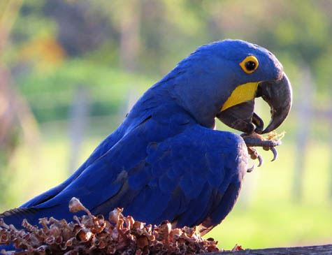
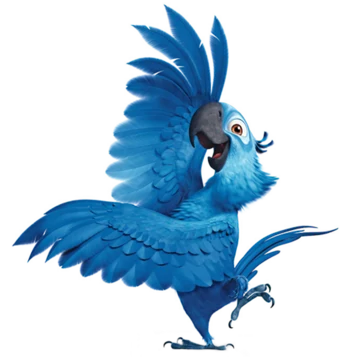

sobre arara azul
É a maior espécie entre os psitacídeos (papagaios, periquitos, araras, maritacas), chegando a medir um metro da ponta do bico à ponta da cauda e pesando até 1,3kg.
São animais com hábitos que chamam a atenção. Elas gostam de voar em pares ou em grupo e nos fins de tarde, se reúnem em bandos em árvores “dormitório”.
as araras do filme rio


blu